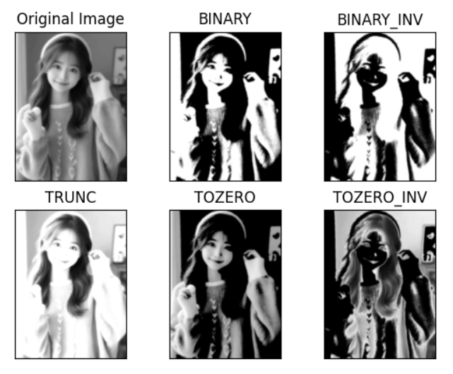

OpenCv 基础函数
读取图片
1
img = cv.imread('img.png', 0)
- 0：灰度图模式加载
- 1：正常加载图片
展示图片
1
2
3
cv.imshow('image', img)
cv.waitKey(0)
cv.destroyAllWindows()
waitKey(0) 表示等待按任意键继续执行，destroyAllWindows()销毁所有窗口
裁剪
1
2
3
4
5
img = cv.imread('img.png', 0)
show = img[80:350, 170:400]
cv.imshow('image', show)
cv.waitKey(0)
cv.destroyAllWindows()
img[80:350, 170:400]表示截取y轴80-350和x轴170-400范围内的图片区域
打印图片
正常打印
1
2
img = cv.imread('img.png', 1)
print(img)
这里打印图片，可以看到正常图片为三维数组，每个值为对应位置的rgb值
1
2
3
4
5
6
7
8
9
10
11
12
13
14
15
[[[236 235 237]
[237 236 238]
[238 237 239]
...
[ 90 113 145]
[ 89 112 144]
[ 89 112 144]]
...
[[170 182 200]
[170 182 200]
[170 182 200]
...
[ 13 20 35]
[ 13 20 35]
[ 13 20 35]]]
灰度打印
1
2
img = cv.imread('img.png', 0)
print(img)
灰度图片则为二维数组，对应位置的灰度值
1
2
3
4
5
6
7
[[235 236 237 ... 119 118 118]
[234 235 236 ... 119 119 119]
[235 236 237 ... 119 119 119]
...
[187 187 186 ... 23 23 24]
[187 187 186 ... 23 23 24]
[186 186 186 ... 23 23 23]]
opncv的操作几乎都是对图片像素点的一些处理操作。
图像处理
阈值与平滑处理
1
def threshold(src, thresh, maxval, type)
-
src：输入图 -
thresh：阈值 -
maxval：超过或低于阈值时所得到的值，由type决定 -
type：-
cv.THRESH_BINARY：超过阈值部分取maxval，否则为0 -
cv.THRESH_BINARY_INV：大于阈值的取0，否则为maxval -
cv.THRESH_TRUNC：大于阈值部分取阈值，否则不变 -
cv.THRESH_TOZERO：小于等于阈值部分取0，否则不变 -
cv.THRESH_TOZERO_INV：大于阈值部分取0，否则不变
-
1
2
3
4
5
6
7
8
9
10
11
12
13
14
15
16
17
18
19
20
import cv2 as cv
from matplotlib import pyplot as plt
if __name__ == '__main__':
img = cv.imread('img.png', 0)
_, th1 = cv.threshold(img, 127, 255, cv.THRESH_BINARY)
pr
_, th2 = cv.threshold(img, 127, 255, cv.THRESH_BINARY_INV)
_, th3 = cv.threshold(img, 127, 255, cv.THRESH_TRUNC)
_, th4 = cv.threshold(img, 127, 255, cv.THRESH_TOZERO)
_, th5 = cv.threshold(img, 127, 255, cv.THRESH_TOZERO_INV)
titles = ['Original Image', 'BINARY', 'BINARY_INV', 'TRUNC', 'TOZERO', 'TOZERO_INV']
images = [img, th1, th2, th3, th4, th5]
for i in range(6):
plt.subplot(2, 3, i + 1)
plt.imshow(images[i], cmap='gray', interpolation='bicubic')
plt.title(titles[i])
plt.xticks([]), plt.yticks([])
plt.show()
